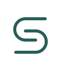

01
Sunjoon KimTECHNICAL NOTESS / Monogram
이름의 첫 글자를 두 개의 곡선으로 정리한 모노그램.
SVG 다운로드 ↗02Sunjoon KimTECHNICAL NOTES
Orbit / Research
서로 다른 관점이 하나의 중심에서 만나는 연구의 궤도.
SVG 다운로드 ↗03Sunjoon KimTECHNICAL NOTES
Note / Build
코드의 괄호와 기록의 행을 결합한 단단한 심볼.
SVG 다운로드 ↗